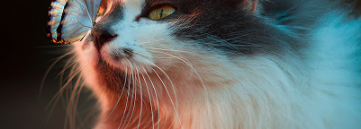

Protégeons-les-Ensemble
Chaque don compte pour leur offrir une vie meilleure
Faites un don
10€
permet de nourrir 5 animaux pendant une journée
20€
permet d’héberger un animal sauvage pendant une nuit
50€
permet de financer les soins vétérinaires complets pour un animal
Notre Mission
Depuis 2010, Quatre Pattes œuvre sans relâche pour la protection et le bien etre des animaux en France. Notre mission est double: secourir les animaux en détresse et sensibiliser le public à la cause animale.
Chaque année, nous prenons en charge plus de 1000 animaux abandonnés, maltraités ou blessés. Grâce à notre réseau de familles d’accueil et nos partenariats avec des refuges, nous leur offrons une seconde chance.
Votre soutien est essentiel pour continuer notre mission. Ensemble, nous pouvons faire la différence pour ces êtres aui comptent sur nous
Histoire de Réussite
Luna
Trouvée dans la rue avec une patte cassée, Luna a été soignée et retrouvé sa joie de vivre. Elle coule maintenant des jours heureux dans sa nouvelle famille.
Luna
Oscar

Max
Testez Vos Connaissances
Les associations gardent la majorité des dons pour leur fonctionnement
Vrai, les associations utilisent plus de 50% des dons pour leurs frais de fonctionnement
Faux
Vrai, ils refusent les animaux malades car c’est trop coûteux
Faux
Vrai, elles reçoivent beaucoup d’argent des donateurs
Faux
Notre Impact
50+ Refuges
Partenaires à travers la France
1000+ Animaux
Sauvés chaque année
10 000+Repas
Distribués par mois
Témoignages
“Grâce aux dons, nous avons pu accueillir plus de 200 animaux cette année et leur offrir une seconde chance.”
Refuge des Quatre Pattes - Lyon
“Le soutien de Quatre Pattes nous permet de maintenir notre mission de protection des animaux sauvages en détresse.”
Sanctuaire Animal - Marseille
“Chaque don compte et nous aide à offrir un avenir meilleur aux animaux abandonnés.”
Refuge du Soléil - Paris